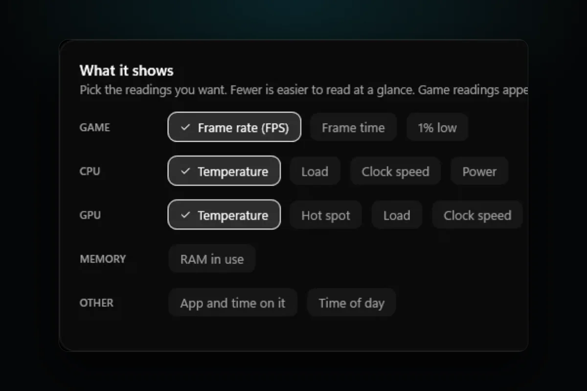

PC problems · FPS and games
How to show FPS on PC with an overlay, and fix RivaTuner
My PC already has four FPS overlays, from Windows, Steam, NVIDIA and RivaTuner. How to show FPS on PC with each of them, which to pick, what to do when the RivaTuner overlay is not showing, and how RigSight keeps the numbers after the game.

The short answer
To show FPS on PC, press Win + G and pin Xbox Game Bar's Performance widget. Steam has a Performance Monitor under Settings > In Game, the NVIDIA app uses Alt + R and AMD Software uses Ctrl + Shift + O. RivaTuner works in almost every game, including exclusive fullscreen.
My PC already has four ways to show FPS on screen. Xbox Game Bar came with Windows, Steam has its own counter, the NVIDIA app has one, and RivaTuner is installed too. Since 18 October, RigSight has also kept about 88 hours of my games' frame rates, read from RivaTuner. That's about 38 hours of Risk of Rain 2 at 151 FPS on average and about 36 hours of Phantom Blade Zero at 68. Here's how to show FPS on PC with each overlay, which one to pick, and what to do when the RivaTuner overlay is not showing.
How RigSight caught it
A counter in the corner tells you the frame rate right now, and it's gone when you close the game. RigSight reads every frame from RivaTuner Statistics Server while you play and keeps it. On the Games page, every play has its average FPS and its 1% low, so the numbers above come from what RigSight kept, not from catching them in the corner.
For the moment itself, RigSight has its own overlay on its Overlay page. You pick the readings, like frame rate, frame time and 1% low for the game, and temperature, load, clock speed and power for the CPU and GPU. Press Alt + Shift + O to show or hide it, or click the shortcut on the Overlay page to pick another. Since version 1.8.0, an Only over games switch keeps it hidden over the desktop and other apps, and it comes back as soon as a game is in front.
In windowed and borderless games, RigSight draws the overlay as its own see-through window. In exclusive fullscreen, where no window can appear on top, it hands the same overlay to RivaTuner, and both look the same. When RivaTuner draws it, the overlay doesn't turn off G-Sync.
Since 1.8.0 you can also put FPS in the taskbar, where it shows a dash while no game is running. The taskbar readings, the widgets and the overlay can each be turned off and on from the tray menu. Widgets have an FPS tile and a Last game tile with its average frame rate, and they sit on the desktop under your windows. The frame rate always comes from RivaTuner, so it has to be running before the game starts, and the Games page has Install RivaTuner and Start RivaTuner buttons. RigSight is free and open source.
How to show FPS on PC with Xbox Game Bar
Game Bar is the FPS counter built into Windows 10 and 11, and it works in most games.
- Start your game and press Win + G.
- Open the Performance widget from the Widget menu if it isn't already on screen.
- The first time, the FPS tab may show Request access. Click it, approve the Windows prompt, and restart your PC. FPS stays empty until you do.
- Drag the widget to a corner and click the Pin icon so it stays when Game Bar closes.
If Game Bar doesn't open, check that Settings > Gaming > Xbox Game Bar is on. If FPS shows N/A, go to Settings > Apps > Installed apps, find Xbox Game Bar, open Advanced options and press Repair, then Reset if that doesn't help.
How to show FPS on Steam
For games you run through Steam, this is the simplest one.
- In Steam, open Steam > Settings > In Game.
- Find Performance Monitor, which older Steam versions call In-game FPS counter, and pick the corner you want.
- Choose how much it shows. The lowest level is the frame rate alone. Higher levels add CPU, GPU and memory readings.
The Steam overlay only works in games started from Steam, which includes other games you add with Add a Non-Steam Game.
NVIDIA FPS overlay
The NVIDIA app has a statistics overlay for GeForce cards.
- Press Alt + Z in game, or open the NVIDIA app, to bring up the overlay.
- Open Statistics and choose what to show, or pick Custom to choose each reading.
- Press Alt + R to show or hide the numbers while you play. The overlay itself must be on in the NVIDIA app under Settings > Features.
Recent versions add CPU temperature and clock speed next to the GPU readings. Instant Replay and recording are separate features. They keep the video encoder working in the background, so turn them off if you only want the counter.
AMD FPS overlay
- Open AMD Software and go to Performance > Metrics.
- Pick the readings, the position, the size and the colour of the overlay.
- Press Ctrl + Shift + O in game to show or hide it.
If the shortcut does nothing, check in AMD Software's settings that the overlay and its hotkeys are turned on. You can change the shortcut there too.
RivaTuner and MSI Afterburner
RivaTuner Statistics Server is the overlay most PC builders use. It draws inside the game itself, so it works in exclusive fullscreen games where a normal window can't appear. MSI Afterburner feeds it hardware readings.
- Install MSI Afterburner, which comes with RivaTuner, or RivaTuner on its own.
- In Afterburner, open Settings > Monitoring.
- Click Framerate in the list and tick Show in On-Screen Display. Do the same for GPU temperature, GPU usage and anything else you want.
- Make sure RivaTuner is running in the tray, then start the game.
What to check when the RivaTuner overlay is not showing
Work through these in order. Restart the game after each change.
- Start RivaTuner before the game. It only attaches to games that start after it, so a game already open won't show the overlay until you restart it.
- In RivaTuner, check that Show On-Screen Display is on, for the global profile and for the game's own profile if it has one.
- Check Application detection level. If it says None, the game is ignored. Set it to Low, and try Medium if Low doesn't work.
- If you made a profile for the game, make sure it points at the game's real program file. Some games run from a different program than their launcher.
- Close other overlays for a test, such as Steam, Discord, Xbox Game Bar, the NVIDIA app and Overwolf. Overwolf's own help suggests detection level Low with Stealth mode and Custom Direct3D support off when they clash.
- Update RivaTuner. New graphics APIs and new games often need a newer version.
- Some anti-cheat systems block overlays in some games. If one game never shows it while others do, that is the likely reason.
Which FPS overlay should you use?
- For a quick look in any game, Xbox Game Bar is already on your PC.
- For Steam games only, Steam's counter is the least work.
- For readings matched to your GPU, use the NVIDIA app or AMD Software.
- For exclusive fullscreen games and the most control over what shows, use RivaTuner.
- To keep the numbers after the game, use something that records them, like RigSight with RivaTuner.
Show one at a time. Two or three overlays drawing over the same game is a common cause of crashes, missing overlays and lost frames.
Your next step is to pick one overlay, set it up once, and turn the rest off. If the number you see looks wrong, FPS drops in games is the place to go next.
Questions people ask
How to show FPS on PC without extra software?
Use Xbox Game Bar, which comes with Windows 10 and 11. Press Win + G in the game, open the Performance widget and pin it. The first time, the FPS tab may ask for access, and it stays empty until you allow it and restart the PC.
How do I show the FPS overlay in Steam?
Open Steam, go to Steam > Settings > In Game and turn on the Performance Monitor, which replaced the old In-game FPS counter in 2025. Pick a corner and how much detail to show. It works in Steam games and in other games you add to Steam and start from it.
Why is the RivaTuner overlay not showing?
Most often RivaTuner wasn't running before the game started, Show On-Screen Display is off, or the game's profile has Application detection level set to None. Another overlay or anti-cheat can also block it. Start RivaTuner first, check those settings, and restart the game.
Does the GeForce overlay affect FPS?
Showing the statistics overlay costs very little. Recording features such as Instant Replay keep the video encoder busy in the background and can cost some frames, more so on slower PCs. Turn off what you don't use.
How do I show an FPS overlay on AMD?
Open AMD Software, go to Performance > Metrics, choose what to show and turn the overlay on. Ctrl + Shift + O shows or hides it in game by default, and you can change the shortcut in the hotkey settings.